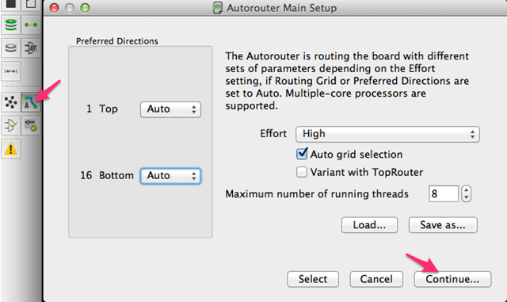
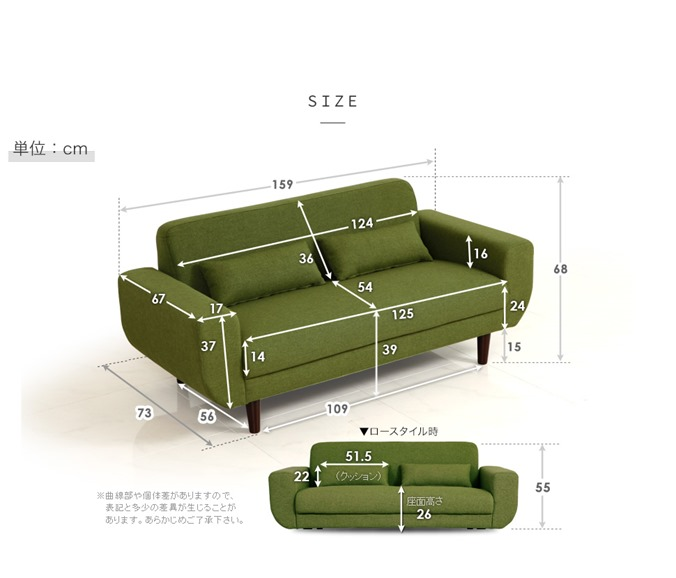
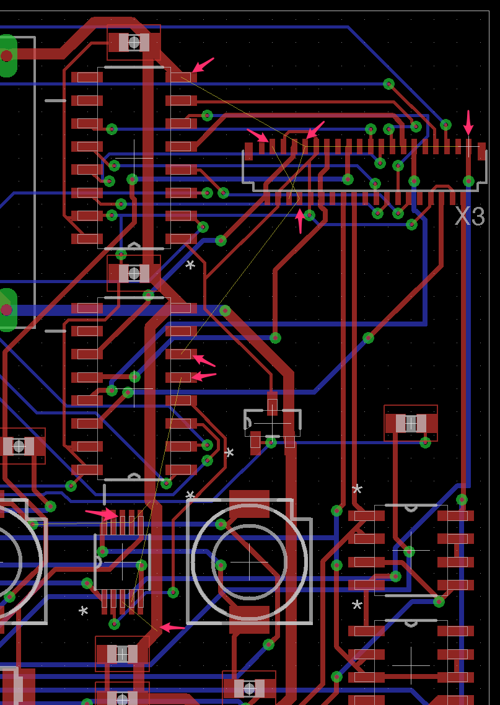
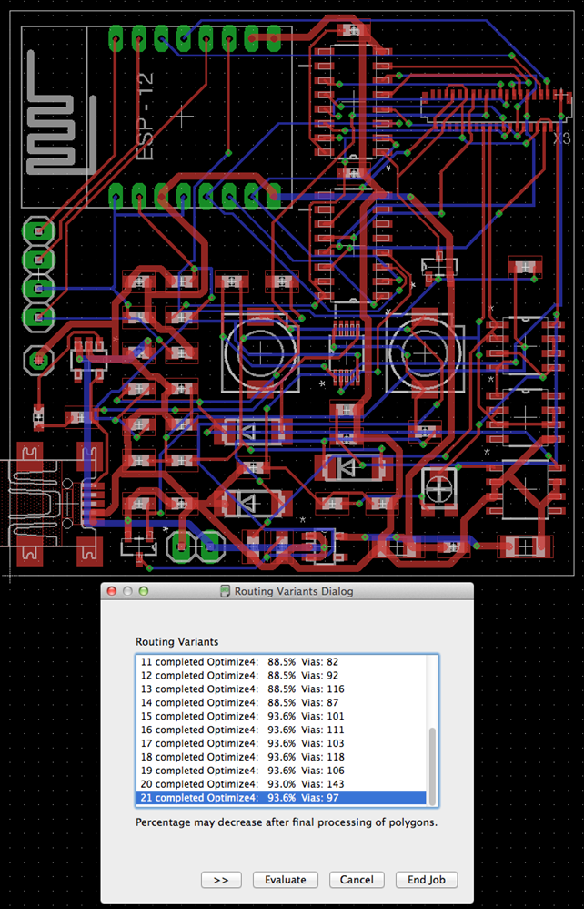
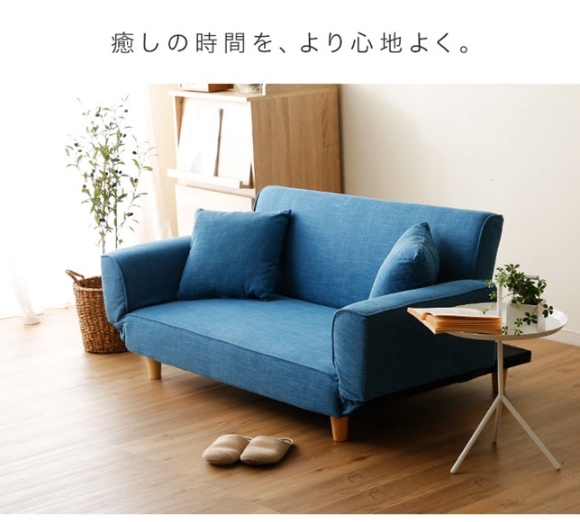
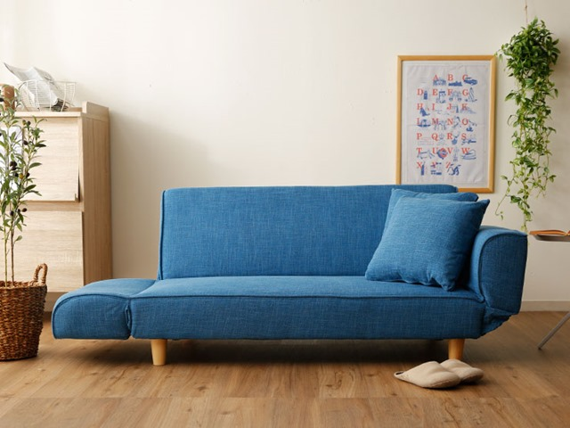
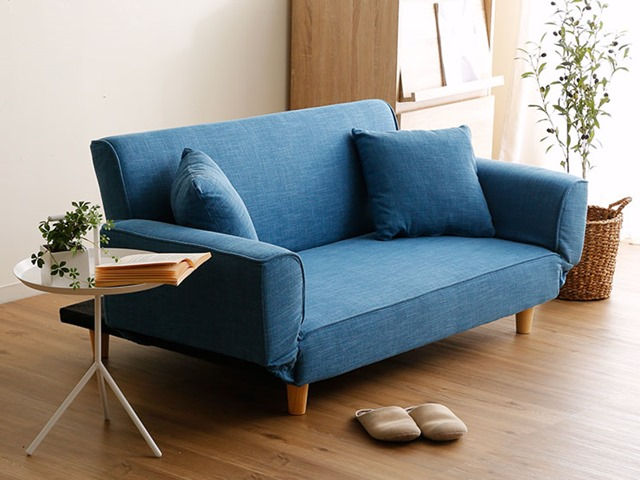

TV っていうのは、ほとんど見ないのですが映画は大好きです。ここ数年、映画はレンタル屋には行かず、amazon などのソースを PC で見ているのですが、やっぱりごろ～んとソファーに寝ながら見たいです。そもそも仕事でも椅子に張り付いていますし、可能な限り家では、腰に負担を与えたくないわけです。
新しい FireTV stick を買う前に、もう自分専用のソファーをゲットするしかないなと、思い切って以下のをポチりました。
居間で見ればいいとお思いの方もいらっしゃるでしょうが、我が家の居間の TV は、かみさん専用と化しているのです。それに映画を見ないときや、設計に疲れたとき、キンドルで本読んだりとかソファーがあるといいよなーと。

ぽちったのは、2.5人用のソファで部屋が窮屈にならず、作業スペースも確保できる程度の大きさで、寝転ぼうと思えば可能なサイズ。（のはず）1000円クーポンが有効の時に買ったので、送料込みトータル2万以下でした。

身長は175cm くらいなので、少し足を折り曲げる感じにはなりますがそれなりに横にもなれるんじゃないかと。

色は、白と茶のインテリアなので緑が合うのではと思い、このカラーにしましたよ。

最後まで、以下のソファーベットになるタイプと迷いました。
 このタイプは、サイドも倒せるのでがっつりと横になって映画を見るにはちょうど良さそうで最後まで迷いました。

リクライニングするサイドはかなり魅力的です。しかし、後ろの支えの板がなんだか気に入らなくて、結局緑のタイプのソファーにしたわけです。

家具を買うのは、椅子を買ったのが最後で久しぶりです。新年度に入り、少し生活にハリが出そうで到着するのが楽しみです。到着したら使用感などをレポートしたいと思います。
新しい FireTV stick （2017）はキャンペーンを必ずやるはずで、限定で安く買えるときがあると踏んでいます。それに合わせて、32インチのモニター（4K じゃない安いもの）も、そろえて快適な プライムビデオ生活をしたいですね。
2k の32インチモニターって2.5万前後で買えるようになったんですよね。ほんと、安くなりました。
皆さんも良い新年度を。